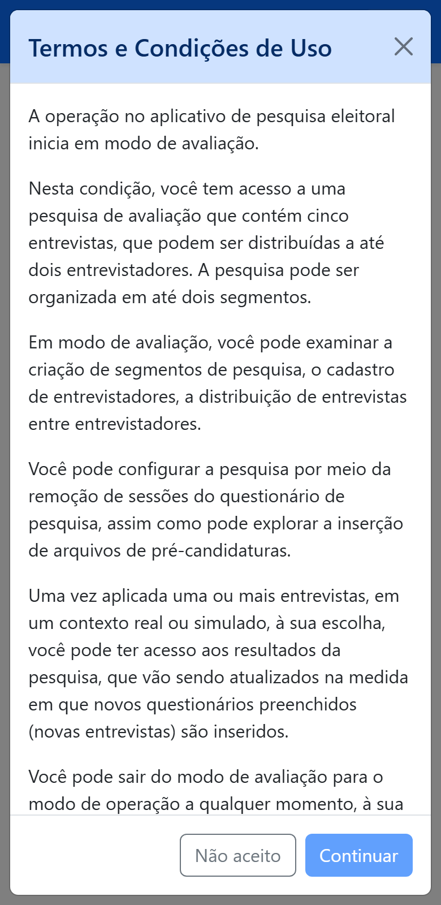

Parte 2 — Modo de avaliação (aprendizado)
3. Conhecer o app no modo de avaliação
Quando você entra pela primeira vez, o aplicativo está no modo de avaliação. É um ambiente de treino: você experimenta todas as funções com uma pesquisa de demonstração, sem pagar nada e sem risco. É um período curto — a ideia é que, em um ou poucos dias, você conheça o aplicativo por inteiro e depois passe para o uso real.
3.1 Aceitar os Termos de avaliação
Antes de tudo, aparece um texto de Termos e Condições de Uso do modo de avaliação. Leia, marque “Declaro estar ciente e de acordo com os termos acima” e confirme. (Se recusar, o aplicativo encerra a sessão.)

3.2 O que você pode explorar
No modo de avaliação as telas são as mesmas do modo de operação. Por isso, para aprender a mexer em cada uma, siga as páginas da Parte 3. Aqui ficam apenas os limites do treino:
- 5 entrevistas de teste no total (não é preciso adquirir — já vêm prontas);
- até 2 segmentos;
- até 2 entrevistadores;
- ao ampliar segmento, você transfere entrevistas entre os dois segmentos (na operação, transferem-se pacotes);
- ao definir pré-candidaturas, só a lista de Presidente está disponível para teste (as demais dependem dos arquivos, no modo de operação).
Algumas ações ficam desativadas no treino, com um aviso explicando o motivo: adquirir entrevistas (a pesquisa de teste já tem as 5), cadastrar o registro na Justiça Eleitoral e registrar código de desconto. Tudo isso funciona normalmente na operação.
3.3 Roteiro sugerido de aprendizado
Uma boa forma de conhecer o aplicativo, na ordem:
- Abra Gerenciar pesquisa eleitoral e observe o painel de gestão (§5).
- Crie um segmento e edite seu rótulo (§7).
- Cadastre um entrevistador (§8).
- Distribua algumas das 5 entrevistas a ele (§9).
- Configure o questionário: remova uma seção, teste as pré-candidaturas (§10).
- Autorize o início e aplique uma entrevista de teste (§11).
- Veja os resultados atualizarem (§12).
3.4 Sair do modo de avaliação
Quando terminar o aprendizado, use o item Sair do modo de avaliação (destacado em amarelo no menu do topo). O aplicativo pede confirmação e, se você ainda não os tiver aceitado, apresenta os Termos de Uso do modo de operação (o texto legal completo — veja a §15).
Confirmada a saída (e aceitos os Termos de operação), você entra no modo de operação. Continue na Parte 3.